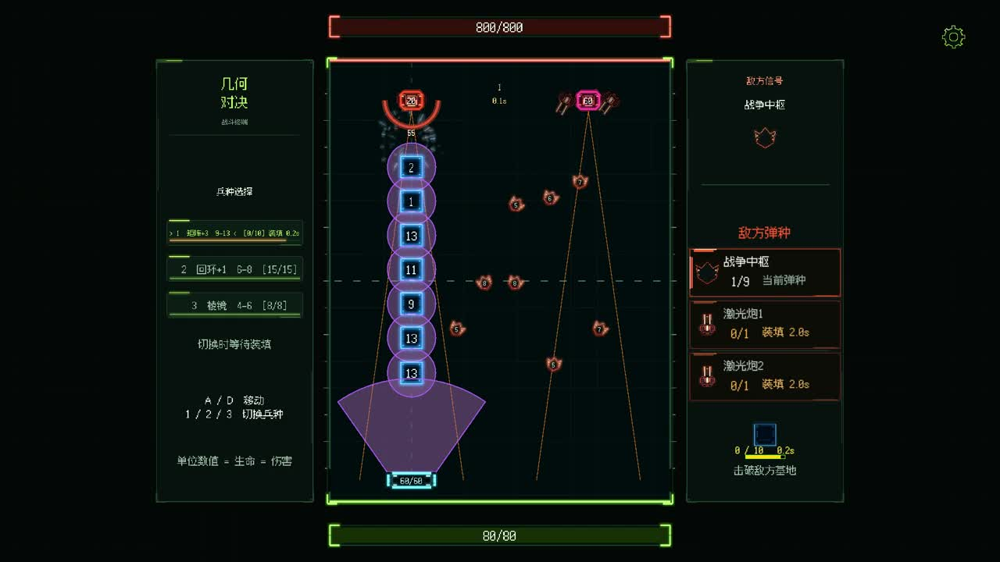
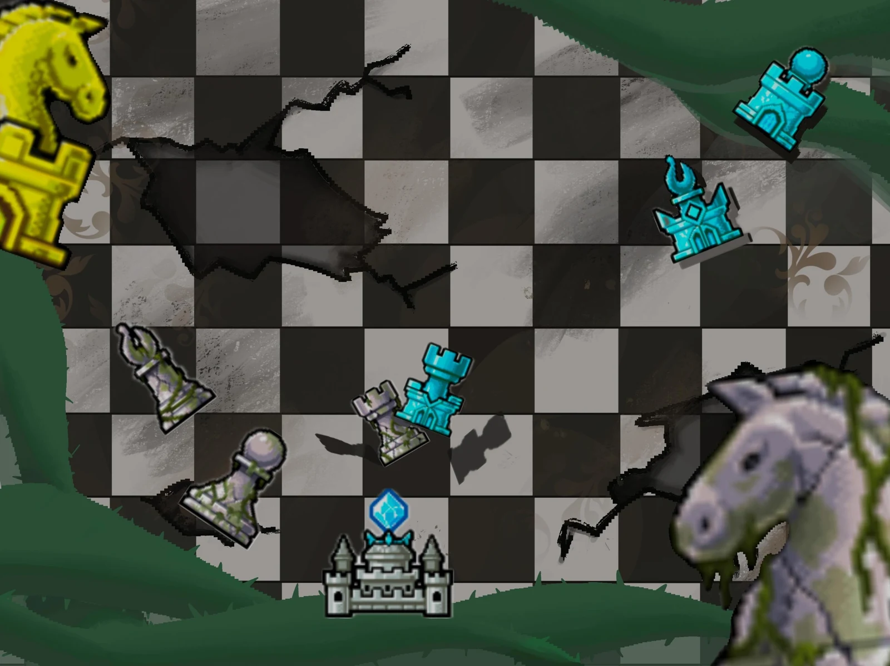
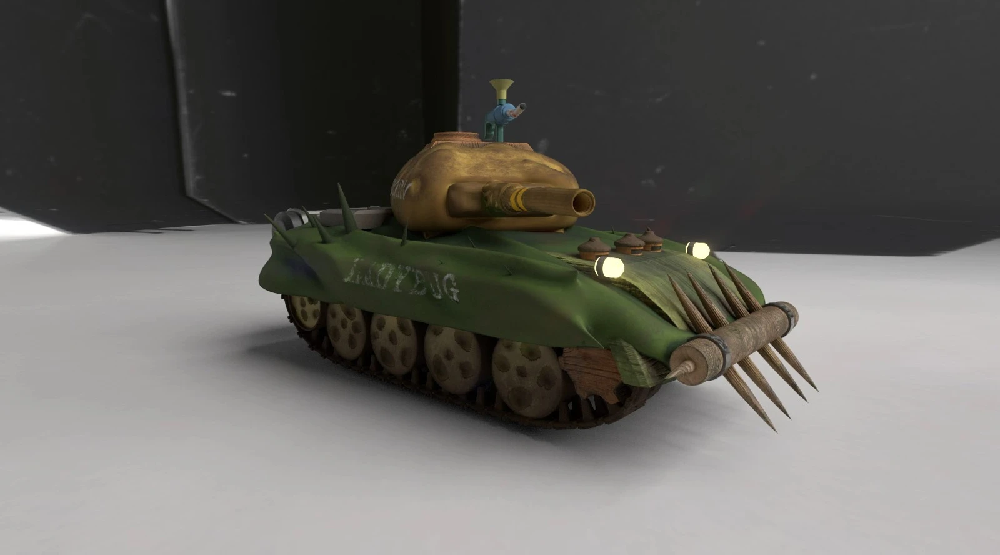
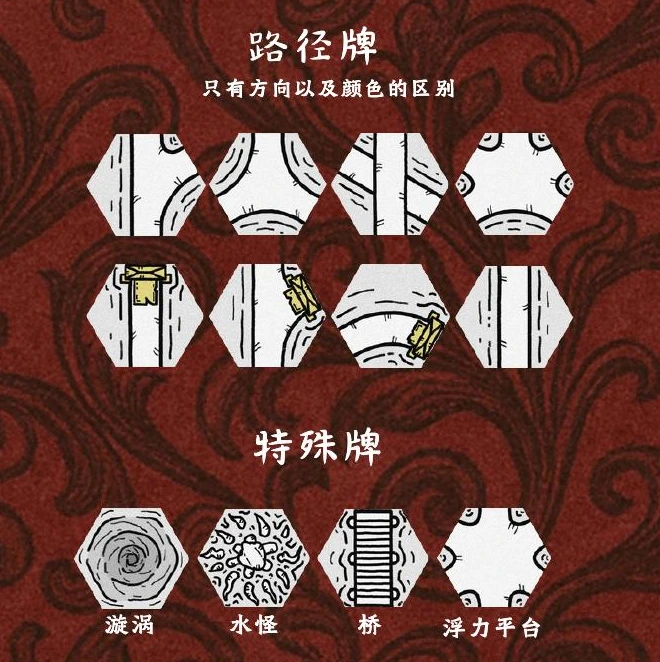
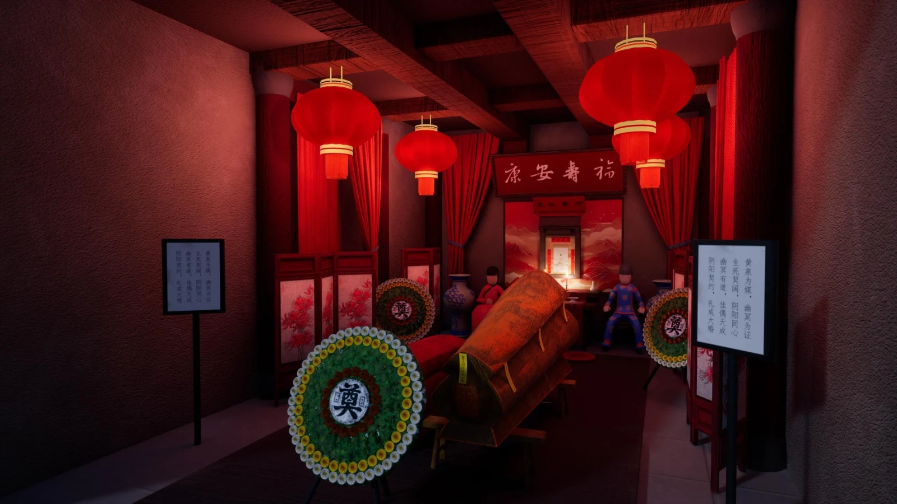

近期重点 · 开发中可玩版本
几何对决 / GeometryDual
将“数值＝生命＝碰撞伤害”扩展成五层战斗与构筑系统，以课堂试玩推动敌人机制、数值模型和交互体验迭代。
五层 PvE单位与插件构筑本地双人 PvP
实机演示与设计迭代 ↗GAME DESIGN / 游戏策划作品集
把玩法概念，转成可以体验的规则。
游戏系统策划 / 玩法策划
从规则设计、数值配置到 Unity 原型实现，
用可玩的项目检验设计中的选择。

将“数值＝生命＝碰撞伤害”扩展成五层战斗与构筑系统，以课堂试玩推动敌人机制、数值模型和交互体验迭代。






我的项目实践覆盖玩法概念、系统规则、基础数值与可玩原型。Chess Siege 中，我单人负责策划、美术与程序实现；桌游项目则让我把注意力放在规则联动、对抗选择和玩家参与空间上。
近期使用 ChatGPT、Codex 与 Unity MCP 辅助需求拆解、方案整理、脚本修改和原型调试。
2025—2026
MA Game Design
预计 2026 年 11 月毕业
2022—2025
BA Game Design · 二等一荣誉（2:1）
英语可作为工作语言
游戏策划实习生
在主策指导下参与某模拟器项目三国题材适配，撰写部分活动与功能策划案，整理功能入口、规则和操作流程，跟进程序、美术实现。
使用 Excel 处理不同类别装备 1–15 级成长数据，通过公式批量计算并整理配置。
手工记录异常表现、触发条件与复现路径，反馈后进行回归验证。
超过 10 年游戏经历，覆盖 MOBA、FPS / TPS、卡牌构筑、Roguelite、策略经营与二次元养成。持续体验新作，把长期游玩与不同游戏之间的规则比较结合起来。
01 / 长期投入
02 / 系统与内容积累
03 / 操作与对抗
| 游戏 | 累计体验 | 已记录成绩 / 补充 |
|---|---|---|
| CS:GO / CS2 | 3000+ 小时 | 系列累计 |
| 使命召唤系列 | 3000+ 小时 | 系列累计 |
| 彩虹六号：围攻 | 1500+ 小时 | 长期体验 |
| 永劫无间 | 1500+ 小时 | 长期体验 |
| 战争雷霆 | 2400+ 小时 | 长期载具战斗体验 |
| 三角洲行动 | 2000+ 小时 | 最高三角洲巅峰 |
| 坦克世界 | 1000+ 小时 | 长期载具战斗体验 |
04 / 重点关注品类
累计体验 100+ 款，持续比较数值曲线、随机性和不同 Build 的成立条件。
Balatro · 杀戮尖塔 2 · 怪物火车 2 · 暗黑地牢 II · 背包英雄 · 哥布林弹球 · 吸血鬼幸存者 · 九王
05 / 复杂规则
关注多个系统如何相互影响，以及复杂规则如何引导玩家逐步理解。
Factorio · 群星 · 城市：天际线 · 坦克世界大战 · 肯希 · 钢铁雄心 IV · Sprocket
保持每周尝鲜 3–5 款新游戏的习惯，近两年体验近 200 款独立与中小型作品，覆盖生存建造、派对合作、桌游数字化与恐怖解谜。